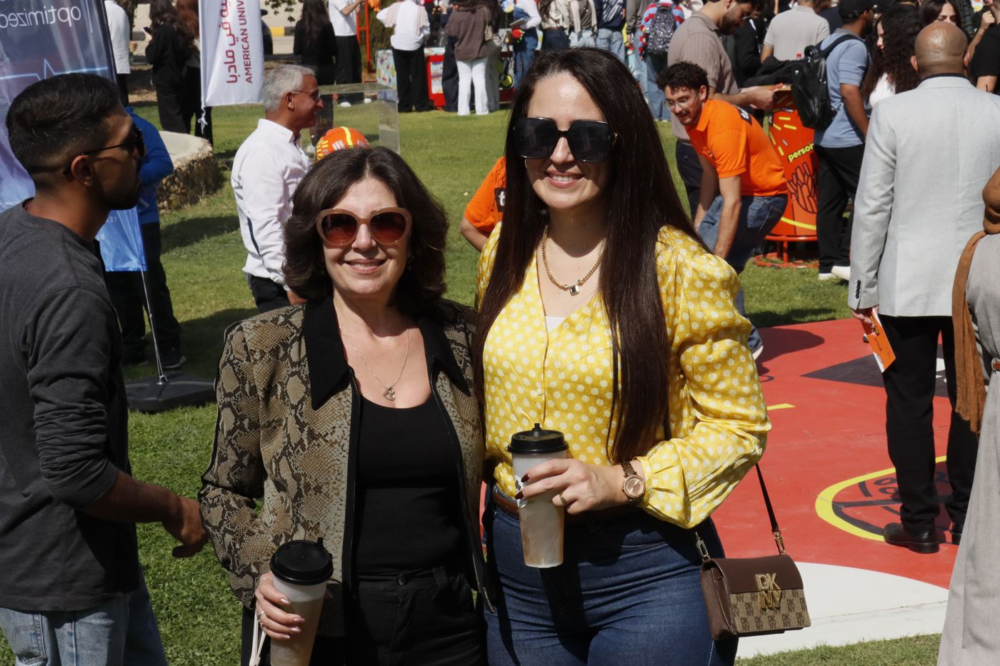

الوصول إلى الجامعة والعيش فيها
يتنقّل معظم الطلبة يوميًا من عمّان ومادبا والزرقاء. هكذا يبدو اليوم خارج قاعات المحاضرات.



باصات الجامعة كل فصل.
جولات صباحية وعودة بعد الظهر، مع جدول مستقل لفترات الامتحانات والصيف. الرسوم لكل فصل دراسي.
رسوم الصيف نحو نصف رسوم الفصل. يُنشر الجدول الحالي قبل كل فصل وفترة امتحانات.
| الخط | الخريف والربيع (دينار) |
|---|---|
| عمّان | 250 |
| الفحيص | 250 |
| عمّان – الزرقاء | 250 |
| الكرك | 250 |
| مادبا | 160 |
غرفة قرب الحرم الجامعي.
للطالبات
بيت النعمة، سكن للطالبات تديره راهبات: غرف مفردة مكيّفة، وإنترنت، ومغسلة، وقاعات طعام، وباص إلى الحرم الجامعي.
افتُتح في تموز 2018 · 88 غرفة · 3,490 م²قدّم طلب سكنللطلاب والطلبة الدوليين
للطلاب وللطلبة الدوليين، يساعد مكتب الطلبة الدوليين في إيجاد سكن في مادبا أو عمّان.
مكتب الطلبة الدوليينمجمّع رياضي ومسبح ومجتمعات طلابية.
يضم المجمّع الرياضي مسبحًا داخليًا نصف أولمبي وملاعب. ومن المجتمعات الطلابية «رحّالة» لمسيرات درب الأردن، و«منتدى فسيفساء لقادة الفكر».
تدير عمادة شؤون الطلبة الأندية، وشعبة الرياضة (بمدرب وأخصائي علاج طبيعي)، والإرشاد النفسي، ودعم السكن.
مركز صحي داخل الحرم.
طبيبان وممرضتان وصيدلي وغرفة طوارئ بثلاثة أسرّة، وسيارة إسعاف مع ممرض للنقل إلى المستشفى.
الاثنين إلى الأربعاء 8:30 إلى 18:00 · الخميس 8:30 إلى 16:30 · السبت 9:00 إلى 15:00
يفتح على موقع الجامعة المركز الصحي وسيارة الإسعاف في الحرم الجامعي
المركز الصحي وسيارة الإسعاف في الحرم الجامعي
مركز اللغات
العربية للمبتدئين والعربية الفصحى والعامية للطلبة الدوليين.
الخريجون والتطوير المهني
يوم مهني سنوي مفتوح للخريجين والمجتمع، وورش تدريبية، وقاعدة بيانات للخريجين.
برنامج الدراسة في الخارج
فصل دراسي في جامعة شريكة بالخارج؛ تشرح الأسئلة الشائعة الأهلية ومعادلة الساعات.
عمادة شؤون الطلبة
الأندية والرياضة والإرشاد ودعم السكن ومجالس الطلبة.
طلبة من دول كثيرة وشركاء في ثلاث قارات.
الجامعة عضو في الرابطة الدولية للجامعات واتحاد الجامعات العربية ورابطة الكليات والجامعات الكاثوليكية، ولها شركاء تبادل منهم جامعة تمبل وجامعة شمال أريزونا والجامعة الكاثوليكية للقلب الأقدس وجامعة سيدة اللويزة.
ابدأ بطلب القبول الإلكتروني.
يفتح طلب القبول الإلكتروني